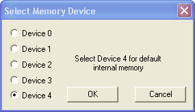

In Font Editor, a newly created or imported font must first be saved to disk
before downloading to BOB-4. To save it, select File-->Save or File-->Save
As. When the “Save As” dialog appears, type a file name for the
font file. The standard BOB-4 font file extension “.b4f” will be
added automatically.
To download a custom
font into a BOB-4 module, select Serial-->Download-->Font (main port)
or Serial-->Download-->Font (debug port) depending on which BOB-4 port
is linked to your PC. The “Select Memory Device” dialog comes up:

Devices 0~3 are reserved
for supplemental font memory chips. If a supplemental device (0~3) is selected,
then it must be enabled and its communication rate must be configured before
proceeding with a download. See v command (n=56~63) in the
BOB-4
Application Guide, or use the Configuration Editor.
Standard XBOB-4 boards include an Atmel AT45DB041D (512kB) as Device 0. BOB-4
modules allow the customer to install Devices 0~2 as outboard options. Device
3 is currently unimplemented. The default setting is Device 4, which is a reserved
portion (62kB) of internal flash memory that is always available.
Downloading begins as soon as a valid BOB-4 font file is selected. New fonts
replace all previously loaded fonts in the selected memory device.
If only one custom font is loaded, then it's always font number 8, which can
be selected for use with BOB-4 command <CSI>8z. If more than one custom
font is loaded, then fonts should be selected by name instead (see z
command in the BOB-4
Application Guide). This is because font numbers can change when multiple
fonts are loaded into different memory devices.
Font names are internal
to font files, and not necessarily identical to font file names.
A font name can be changed by opening the font and selecting Edit-->Font
Name.
In order to load more than one font into a memory device, the desired font files
must first be combined into a single file that fits within the available space.
Space required for each font is given in the font parameter list when the font
is open in Font Editor. To combine fonts, select File-->Concatenate Fonts.
When the "Open File" dialog appears, select all of the files you wish
to combine, and then click “Open.” Multiple files may be selected
by holding down the Ctrl key while left-clicking additional
file names. When the “Save As” dialog appears, name the combined
font file and click “Save.” Downloading the resulting file to BOB-4
then stores all fonts into the selected memory device.